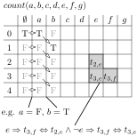

| tags:[ tutorial ]
Modelling problems with SAT
We shall go through many example problems that demonstrate how to model them using Satisfiability problem. Such model is useful because there are many fast solvers for SAT so we can use them to solve our instance and extract the solution back to our original problem.
We aim to create a formula in Conjunctive Normal Form (CNF): $$(a \lor b) \land (c \lor d \lor e) \land \dots \land (f \lor g)$$
Problem: Eight Queens
Problem: There is a chessboard and we aim to place 8 queens so that no two threaten each other.
Solution: Model each space of a chessboard as a boolean variable. Set that each row, column, diagonal, and second diagonal contains at most one TRUE (queen) value. Force each row to contain at least one queen.
Basic tools
- force at least one – Put the variables into a common clause: $$(a \lor b \lor c \lor d)$$
- force at most one – Forbid appearance of any pair: $$(\neg a \lor \neg b) \land (\neg a \lor \neg c) \land \dots \land (\neg c \lor \neg d)$$
- implication – Model the if, then clause as implication, which is equivalent to a clause that has the if part negated: $$a \Rightarrow (b \lor c \lor d) = (\neg a \lor b \lor c \lor d)$$
- permutation – Make a 2D table and create the same constraints as for the Queens problem but without diagonals. Variable at row i and column j says that the permutation has at position j value i.
The first two tools enable us to solve the Eight Queens problem. Both of these approaches also allow for a more complex general solution by counting that we show later.
Problem: Sudoku
Using what we learned we are able to solve a classical sudoku.
Problem: Given a partially prefilled 9x9 board, fill in the remaining numbers 1-9 so that: every row, column, and every of nine 3x3 small squares contain all numbers 1 throught 9.
Solution: Model each possible value (1 through 9) in each square as a varible. Set that each square contains exactly one of these values. No row, column, and 3x3 square contains two of the same value – this is similar to the constraints in queens but is created for each value separately. Set the variables for the pre-filled squares to TRUE.
- expand all values of a space – we modeled possible values of one square by many variables; this is quite common in SAT, however, for problems where the number of possibilities is high it may be beneficial to use QSAT, which already enables to model these features
Counting
We can count a number of TRUE values within a set of variables in the following way. Create a 2D table with the variables in x-axis and the maximum value (that we want to count to) on the y-axis. Make a variable for each space in this table – a value in row i and column j represents that the first j variables have exactly j TRUE valuations.
To fill in the table create one extra column at the beginning that has the only TRUE value on row 0. Then, we look at the valuation of a variable a_j and if FALSE just copy the column as it was, and if TRUE shift the column by one row – this represents that the number of TRUE values is one bigger. $$a_j \Rightarrow (t_{i,j} \Leftrightarrow t_{i-1,j-1}) \land \neg a_j \Rightarrow (t_{i,j} \Leftrightarrow t_{i,j-1})$$ Be careful about the first row which is fixed to FALSE when a_j is TRUE.
Having n columns in total, we can check whether the number of TRUE values is exactly k in variable t_{k,n}. We can also check that the number of TRUE values is at most k as: $$(t_{0,n} \lor t_{1,n} \lor \dots \lor t_{k,n})$$

Problem: Vertex cover
Problem: Given a graph, select at most k vertiecs so that every edge is incident to at least one selected vertex.
Solution: Create a variable for each vertex that says whether it was chosen. Every edge creates a clause that requires at least one incident vertex to be chosen. Count the number of TRUE values and check whether it is at most k.
Problem: Graph 4-coloring
Problem: Given a graph, color each vertex by one of four colors so that no two adjacent vertices have the same color.
Solution: For each vertex create four variables that say its color. Of these four exactly one shall be true. For each edge forbid the four invalid combinations on its incident vertices.
Problem: Hamiltonian cycle
Problem: Given a graph create a cycle that traverses every vertex exactly once.
Solution: Look at the problem from the view-point of the solution cycle. The solution contains a permutation of n vertices. We also need to check that every consecutive pair of vertices within the permutation is adjacent. So create a permutation (described above) and create constraints so that if vertex u is chosen at position j then one of its neighbors is chosen in the next position (implication). This constraint is repeated for every vertex and every position. We can (optinally) fix that one fixed vertex is at position 0 as the solution for the Hamiltonian cycle always passes all vertices and we do not care about cyclic shifts.
Time-wise decomposition
Many problems have a time component to them. This is modeled by copying the variables for every time stamp and tying them together through constraints. Often, the changes that happen between time T and T+1 are local, so we model a particular action as a variable and set implication that if an action happened then everything that is not adjacent did not change.
Problem: Vertex Cover Reconfiguration
Problem: Given a graph and a vertex cover A and another vertex cover B, create a sequence of vertex covers that starts at A and ends in B, has length at most k, all covers have the same number of covering tokens, and every pair of consecutive covers differ in at most one token that moved between two adjacent vertices.
Solution: Model each of the k time-stamps separately as the Vertex Cover problem (above). Fix the first configuration A and the last configuration B. Model actions of moving a token in time-stamp T as selection of exactly 1 from every edge of the graph. A selection of an edge at time T means that the token shall move along it – model this by constraints: $$A_{T,u,v} \Leftrightarrow (V_{T,u} \Leftrightarrow V_{T+1,v} \land V_{T,v} \Leftrightarrow V_{T+1,u} \land V_{T,w} \Leftrightarrow V_{T+1,w} \land \dots)$$ The chosen action exchanges the token on the vertiecs (u,v) that are incident to the selected edge. We also need to set that every non-incident vertex (w) remains unchanged.
Problem: 15 puzzle
Problem: Given a 4x4 grid that is arbitrarily filled with numbers tokens 1 through 15 and one empty space create a sequence of tokens sliding into the empty space (up, down, left, right) such that we end up in a configuration where the numbers go from 1-15 in rows from left to right, ending in the empty space.
Solution: Model the state as a permutation of numbers on spaces. Again, we decompose by time. We have to fix some maximum time T for this process. Action consists of exchanging two neighbors, where one of them has to be the empty space. The first and final configuration was given, so we fix valuations of those variables.
Modelling graphs, automata, or circuits
It is easy to model the problem when the structure is fixed. However, we can model even unknown structures. For example, given a graph on N vertices we can model each edge as a variable and say that it is present if and only if the variable is true. Many of the problems above could then be adapted by implying some rules only if the correct edges are present.